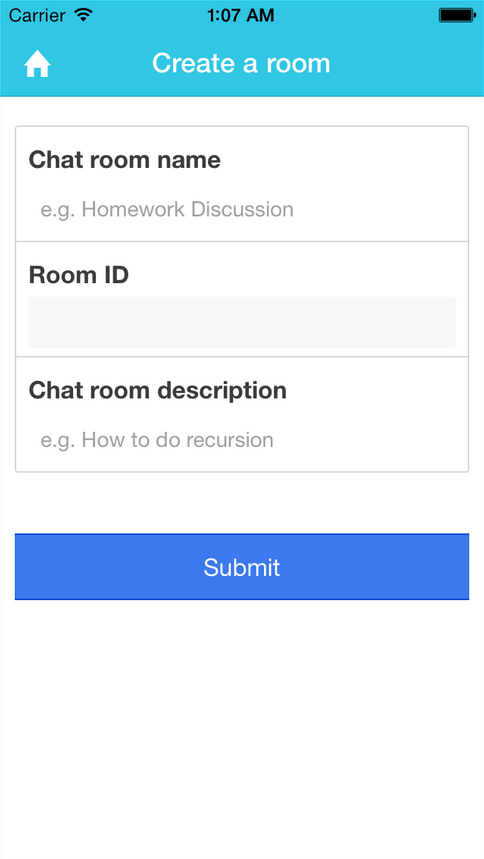
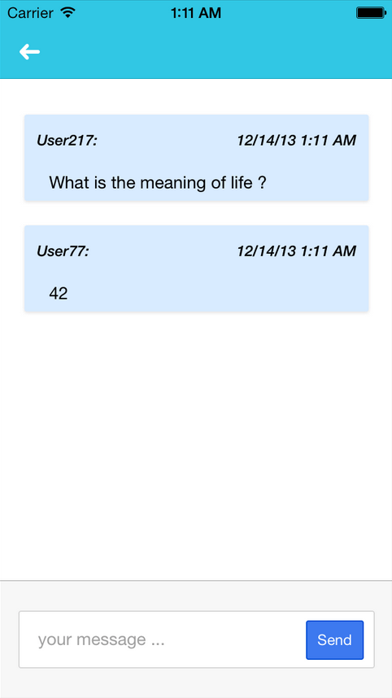

AccelerateSP


AccelerateSP is a mobile app for Accelerate Sports Performance (SF) athletes. Some features of Ionic used include cards, button bars, headers, and the nav controller.
More info

Ionic Weather


Real-time Chat


A real-time chatroom utilizing Firebase, Cordova, and Ionic to support multi-user chat. Uses angularFire for easy 3-way binding.
Check out the presentation on how this was made.